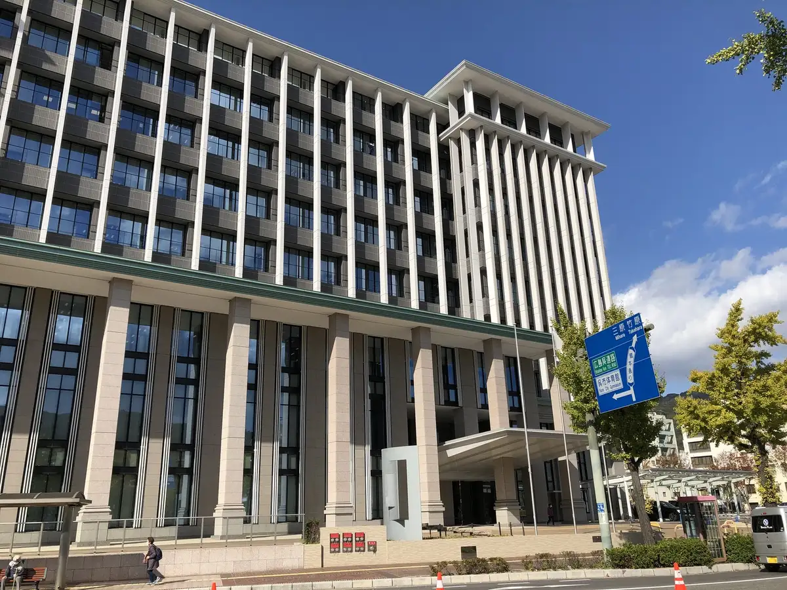
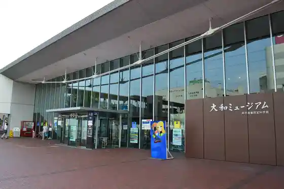
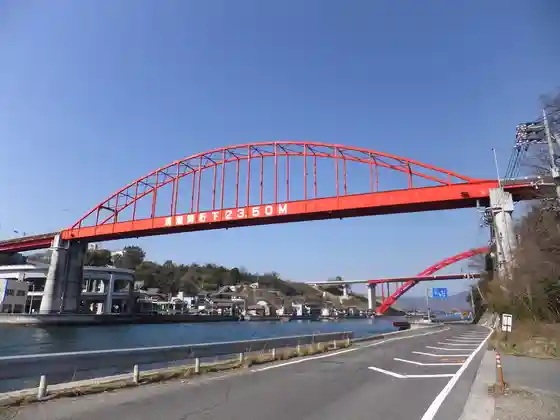
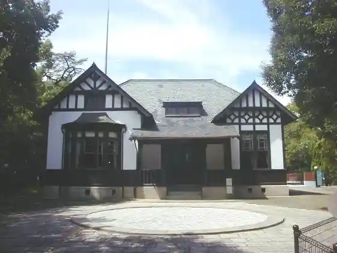

Kure
Kure · Hiroshima
Kure
Highlighted on the Hiroshima map.

Stay
Kure Hankyu Hotel
Konfoto Hotel Kure
Toyoko INN Kure Eki
Ko Suteshon Hotel Anekkusu
Byupoto Kure Hotel
Kureitombei Hotel
Hotel Kureshio Kure Hondori
K.M.H Art hotel by Kure Morisawa
Ko Suteshon Hotel Riijientohausu
Dining
Shisenryori 110
Mune Karage to Kyo Sake Meshi Miraizaka Gochu Tori Mise
Teppan Tachibana
Ya Dai Zushi Gochu Tori Town
Shinshu Soba Tokoro Soji Bo Kure Yume Taun Mise
Samugyopusaru Buru
Tonkatsu Hito
Kei
Kushi Yama
Ondo
Irumare
Teppanyaki Hon Tei
Ngon
Teppanyaki
Sumibi Yakiniku Goro Kure Mise
Wasai Daichi
Onsen
Shatoreze Gatokingu Dam Setochi Public Bath
K.M.H Art hotel by Kure Morisawa Furo
Sights
Yamato Museum

Arei Karasukojima
Ondo Bridge

Irifune Yama Memorial Museum

Kure Ritsu Art Museum
Tetsu no Kujira Kan